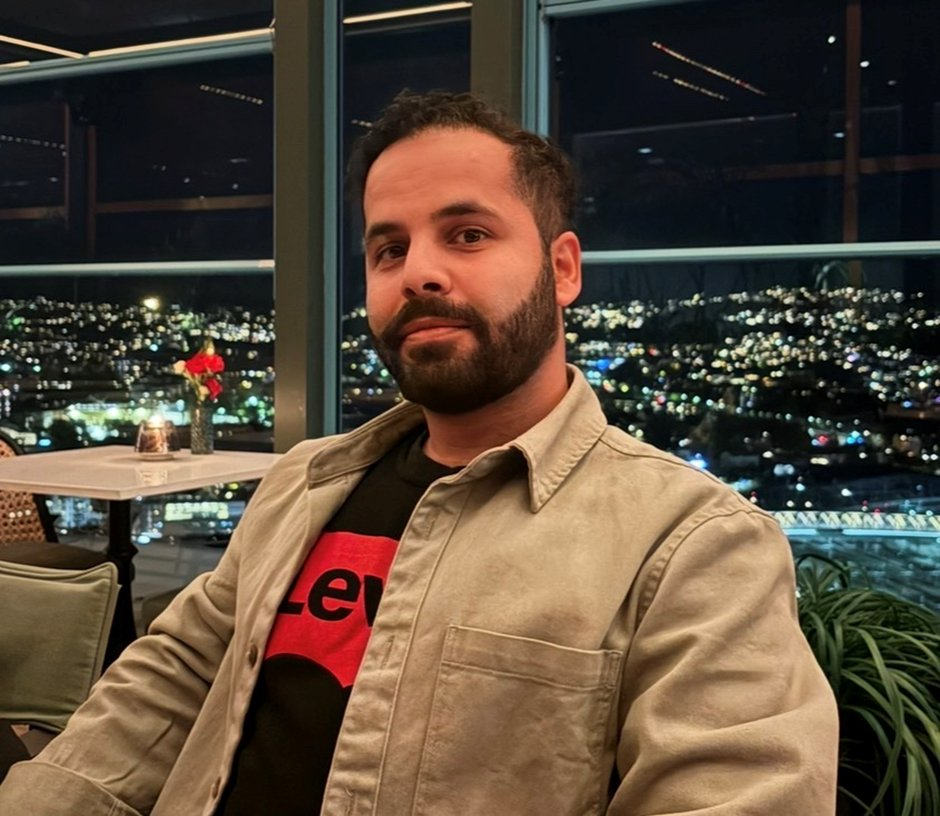
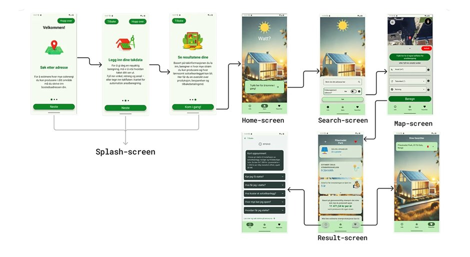
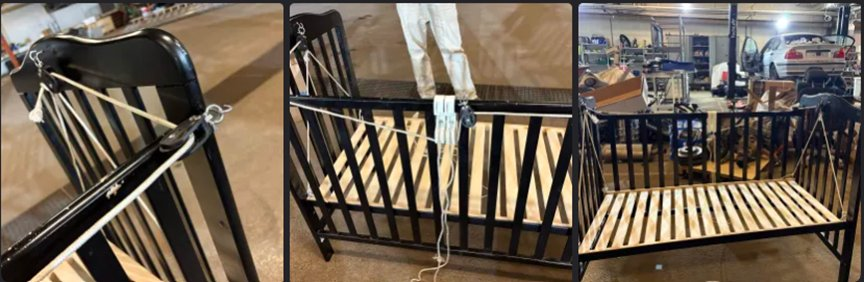
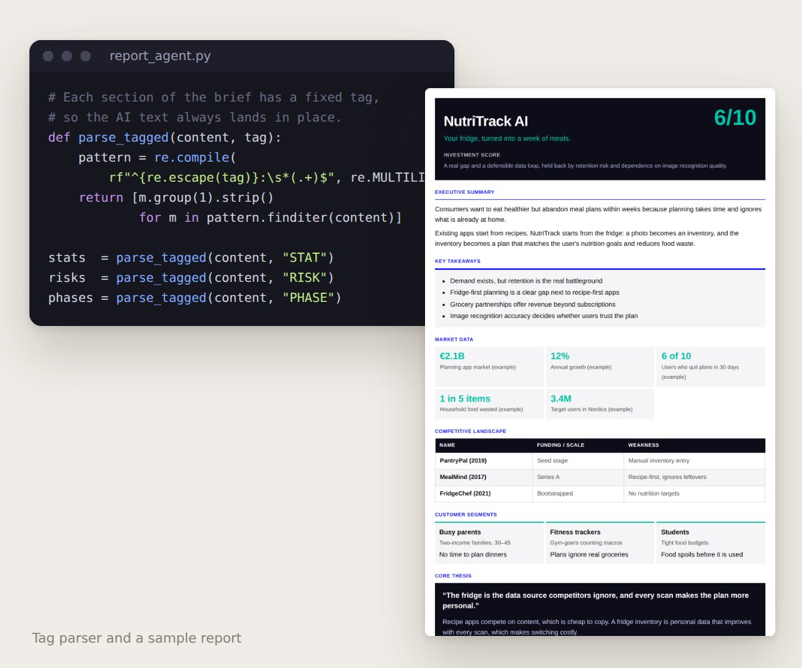
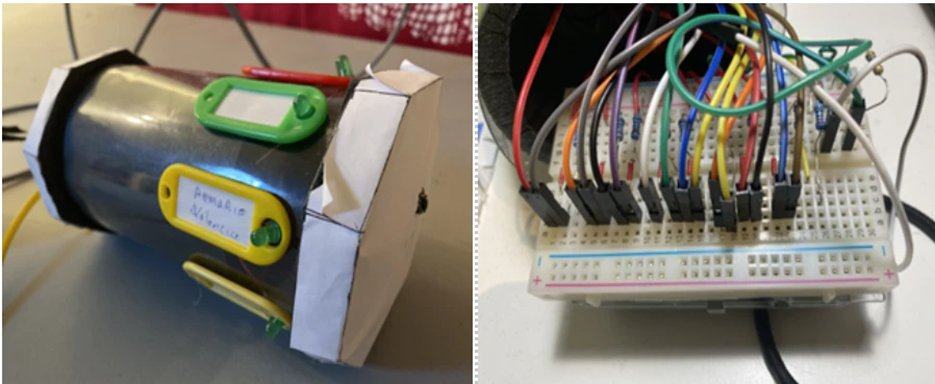
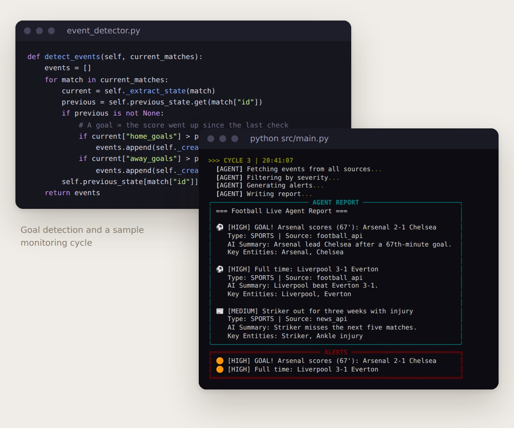
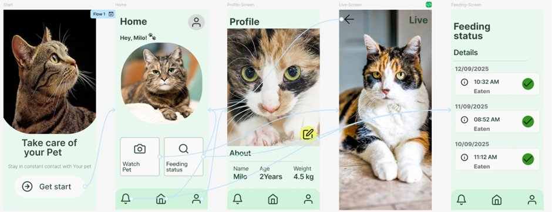
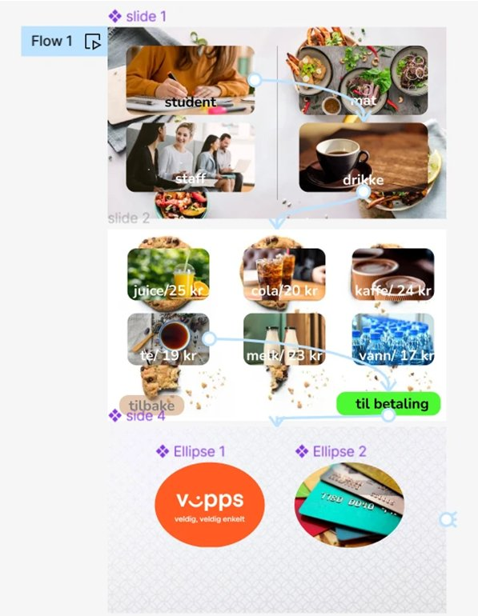
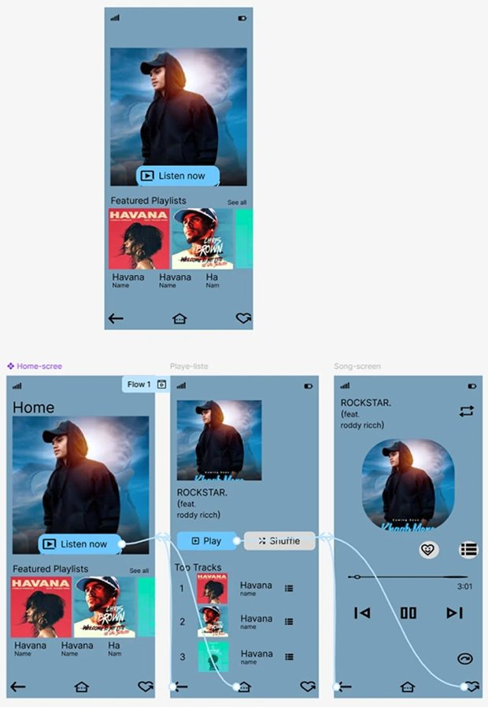

I'm Mohamad Alkhaber, a UX designer and entrepreneur based in Oslo. I turn ideas into real products, through research, design, and just enough code to make things work.

About me
I love building things that people actually want to use. That path gave me an unusual mix of analytical thinking and creative problem solving.
I hold a Bachelor's in Informatics: Design, Use and Interaction from the University of Oslo, and I'm currently in my Master's in Entrepreneurship and Innovation Management, which is less about textbooks and more about going from idea to real product, fast.
Whether I'm sketching flows in Figma, writing Kotlin for an Android app, or helping a team evaluate a startup opportunity, I bring the same approach: understand the problem first, then build something that genuinely solves it.
Selected Work
A mix of apps, hardware, and interfaces — each started with a real user problem and ended with something tangible.








Education
Experience
Contact
Open to internships, collaborations, and freelance work in design or development. Based in Oslo and available remotely too.